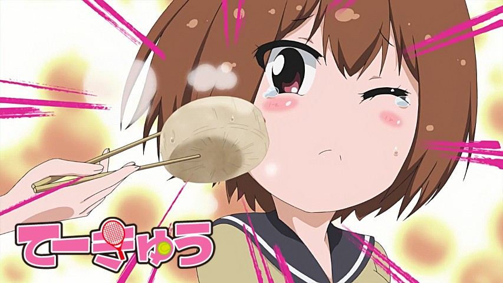
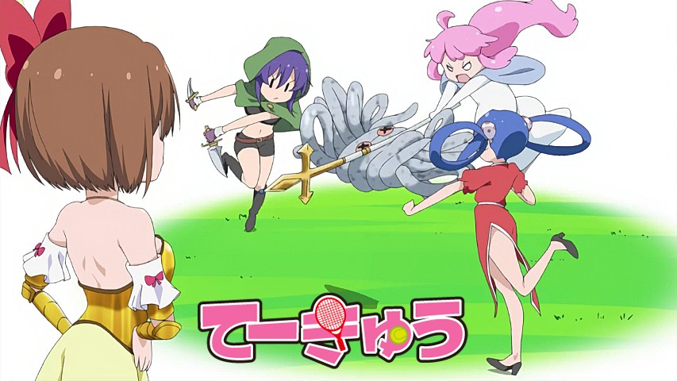
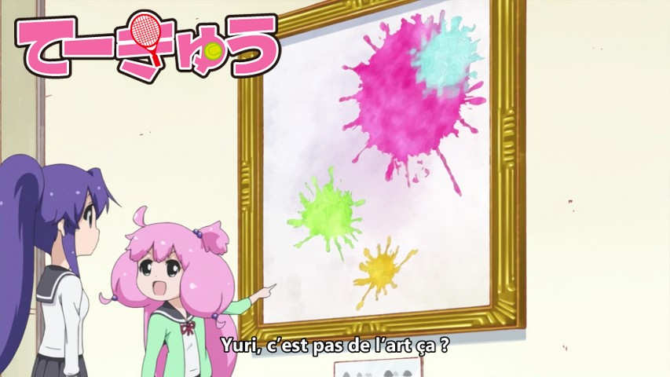
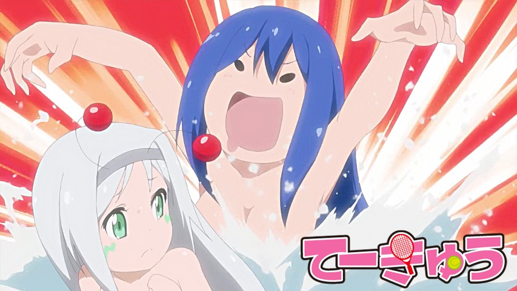
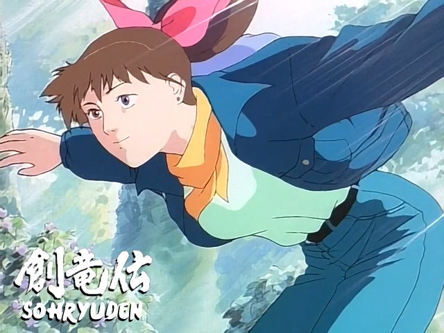

Bienvenue sur le site de la Nobluesky Fansub !
Teekyuu Saison 8 Ep 9 vostfr

Bonjouur~~
Voici l'épisode 9 de Teekyuu !
Avec des beaux édits tous frais, je n'en parle plus car ça devient banal. Mais comme je les fais tous, il faut bien que je m'en vante !
Une histoire. Une séparation, puis... Une rencontre qui changea sa vie.
Découvrez ce préquel sur l'histoire de Kanae, un moment...
Teekyuu Saison 8 Ep 7 à 8 vostfr

Salut les gens,
j'espère que vous apprécierez ces nouveaux Teekyuu, car l'épisode 7 m'a pris des heures à l'édit (ils sont simples mais il y en avait beaucoup). Parfois je me demande si ça n'irait pas plus vite pour une série "normale" de 24 min, mais bon, ça ne me dérange pas de le faire (quand j'ai le temps) ^_^
Comme à l'accoutumée, c'est le délire intégral...
Teekyuu Saison 8 Ep 6 vostfr

Bonsoir,
Voici l'épisode 6 ! Comme je suis en mode marmotte intégrale ce dimanche, je ne pousserai pas la news plus loin au risque de me vautrer, alors bonne rigolade et à bientôt !
Teekyuu Saison 8 Ep 3 à 5 vostfr

Omatase shimashita ! Vous êtes pas morts depuis le temps ?!
Après ce changement de source un peu mouvementé, je pense reprendre un rythme acceptable. Avec la traduction de l'OP2 en moins (les deux Openings alternent sur cette saison 8).
Des histoires complètement louches vous attendent...
Sohryuden 01 vostfr

Bien le bonsoir.
Après une gestation interminable, digne d'une vache (9 mois), ou même d'une éléphante (20 à 22 mois), j'annonce ouverte la chasse au dragon !
Dragon dont je ne connais pas la période de gestation. D'ailleurs ça serait plutôt incubation, car ça pond des œufs un dragon nan ?
Je le rappelle de nouveau car ça ne fait pas de mal : inutile de prendre la série au sérieux. Les clichés sont volontaires...